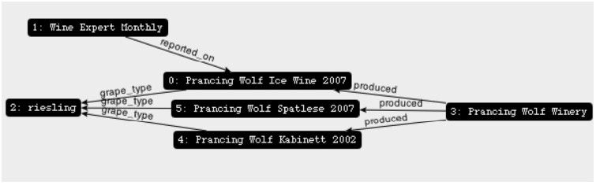

蹦极用的绳索看上去并不像一件标准的木匠工具，正如Neo4j似乎并不像标准的数据库。蹦极绳不只是蹦极绳，它可以用来绑东西——奇形怪状的东西皆可。如果把桌子1、柱子和运货的一辆皮卡绑在一起对你来说很重要，听我的，随身带着蹦极绳吧。
注释1 译者注：这里的table和column一语双关，在数据库中，它们分别指表和列。
Neo4j是一种新型的NoSQL数据存储，称为图数据库。顾名思义，Neo4j将数据另存为图（数学意义上的图形）。同时，它也称为“白板友好”的数据库，也就是说，如果能在白板上设计一些框和线条，就可以用 Neo4j 把它存起来。Neo4j 的重点是数据间的关系，而非数据集合间的共性（比如，文档集合或者数据行组成的表）。在这种方式下，Neo4j能以自然而直接的方式存储多变的数据。
Neo4j 很小，小到足以嵌入几乎任何应用程序。另一方面，它能够存储数百亿的节点与相同数量的边。并且，一旦有了集群支持，在多个服务器间实现主从副本，Neo4j 几乎能处理任何规模的问题。
设想一下，你要创建一个葡萄酒建议引擎，众所周知，葡萄酒有不同的品种、产区、酒庄、年份以及标志。此外，你可能得记录描述葡萄酒的文章。也许，你还想让用户能够跟踪他们最喜爱葡萄酒的信息。
对于这样的需求，关系模型会创建一个目录（category）表，以及某个酒庄的酒与多个目录或者一些其他数据的一种多对多关系。可是，这与人类建模数据的方式不太一样。比较这两张图：图7-1 与图 7-2。关系数据库领域有句老话：只要时间够长，所有的字段都不是必需的。Neo4j只在必要之处提供数据值与结构，从而默默地解决了这个问题。如果一种调制葡萄酒没有年份，取而代之的是装瓶年份，以表明调制时间。而模式无法为此做任何调整。
图7-1 关系UML描述的模式

图7-2 白板上的葡萄酒建议数据
在未来的三天里，我们将学习如何通过控制台、REST 以及搜索索引与 Neo4j 交互。我们也会根据图算法，驾驭规模更大的图形。最后，在第3天，我们将概览Neo4j为关键任务提供的企业级工具，其范围包括：完全遵循ACID的事务、高可用性的集群以及增量备份。
本章会使用Neo4j 1.7企业版。尽管GPL社区版能支持我们所需的大部分操作，但是，第3天我们需要一些企业级的功能：高可用性。
读者朋友请不要意外，第一天我们就不打算浅尝辄止。除了探究Neo4j的Web接口，我们还将深入探索图数据库的术语以及CRUD（Create/Read/Update/Delete）。今天的主要内容是学习如何通过一个称为遍历（walking）的过程，查询图数据库。在本章中出现的概念，与我们到目前为止已经看到的其他数据库相比，差别很大。这些数据库主要以文档或者基于记录的形式展现这个世界。而在Neo4j中，一切都与关系（relationship）有关。
不过，在我们接触这些内容之前，不妨以Web接口为起点，看看Neo4j是如何以图的形式表示数据，以及Neo4j是如何遍历图的。首先下载并解压缩Neo4j包，然后用cd命令进入目录并以如下命令启动服务器：
$ bin/neo4j start
为确保服务器启动并开始运行，用curl命令访问如下URL：
$ curl http://localhost:7474/db/data/
与CouchDB一样，默认的Neo4j包自带一个相当好用的Web管理工具以及数据浏览器，这个浏览器尤其适合运行一些简单命令。如果这还不够，Neo4j 配备了我们见过的最酷的图数据浏览器之一。当然，自带的工具足以提供一个完美的开始，这是因为第一次接触图遍历会觉得很别扭，工具愈简单愈好。
打开Web浏览器，访问其管理页面。
http://localhost:7474/webadmin/
你会看到一幅彩色但依旧为空的图，如图 7-3所示。点击页面顶端的Data browser（数据浏览器）选项。你会发现新安装的Neo4j有一个事先存在的节点：node 0。
图数据库中的节点与前面章节谈到的节点并非完全没有关联。之前，我们提到节点，意思是网络中的物理服务器。你若把整个网络看做一幅巨大的相互连接的图，一个服务器节点就是一个点或者顶点，而服务器之间的关系，就是边。
在Neo4j中，节点的概念与之类似；作为边之间的顶点，能够以键值（key-value）集合的形式存放数据。点击+Property按钮，将 name作为键，Prancing Wolf Ice Wine 2007作为值，表示某种葡萄酒及其年份。然后，点击+Node按钮，如图7-4所示。在新建的节点上，增加name属性，其值设置为Wine Expert Monthly（我们将它简写为：[name : "Wine Expert Monthly"]）。不难发现，节点的编号是自动增加的。
图7-3 Web管理页面仪表板
图7-4 点击+Node按钮添加新节点
现在，我们有两个节点，但它们之间没有关联。由于Wine Expert报道了葡萄酒Prancing Wolf，因此得通过创建边，将这两个节点联系起来。点击+Relationship按钮，从 node 1指向 node 0，关系类型为reported_on。
对于这个新建的关系，可以通过如下URL查看其详细信息...
http://localhost:7474/db/data/relationship/0
该关系表明Node 1报道了Node 0。
与节点一样，关系也能包含属性。点击+ Add Property按钮，输入属性[rating : 92]，以此记录该葡萄酒的评分。
这种特殊的冰葡萄酒由雷司令葡萄（riesling grape）1，酿制而成，我们得把这条信息加入数据库。一种方法是直接在表示该葡萄酒的节点上添加属性，但是雷司令其实是一种类别，其他葡萄酒也会划入此类，因此更合适的方法是创建一个节点，并将其属性设置为[name : "riesling"]。然后，添加从node 0指向node 2的关系grape_type，并设置属性[style :"ice wine"]。
注释1 一种起源于德国莱茵地区的葡萄。——译者注
对了，我们的图看起来会是什么样子呢？点击“switch view mode”按钮（在+Relationship按钮旁边，看起来歪歪扭扭的那个），你看到的画面，类似图7-5。
图7-5 与当前节点相关的节点图
点击 Style 按钮，弹出一个菜单，可以从中选择配置，用于渲染图形的可视化效果。想在图上看到更多的有用信息，先点击Style按钮，然后New Profile按钮，你会看到页面“Create new visualization profile”。在页面顶部，输入wines作为配置名，再将 label输入框的值从{id}改成{id}: {prop.name}。点击Save按钮，回到可视化页面。现在，可以从Style菜单选择wines配置，页面渲染效果类似图7-6。
图7-6 自定义配置的节点图
通过Web接口进行编辑是一种简单易学的方法，但是我们还是需要更强大的接口以应对实际的生产工作。
有若干种编程语言能与Neo4j进行互操作：Java代码、REST、Cypher以及Ruby控制台Ruby console）等。我们今天会用一种名为Gremlin的编程语言，它是用Groovy编程语言实现的图遍历语言。然而，使用Gremlin事实上不需要了解Groovy，所以不妨将它看做另一种声明式1的领域特定语言，好比SQL。
注释1 关于declarative programming的详细信息参见http://en.wikipedia.org/wiki/Declarative_programming。——译者注
与我们研究过的其他控制台一样，Gremlin 提供了访问其底层语言架构的能力。也就是说，可以在Gremlin中使用Groovy构造函数与Java类库。我们发现，较之Neo4j的原生Java代码，Gremlin与图交互的方式更强大也更自然。更厉害的是，Gremlin控制台可以在Web管理工具中使用；只须点击Web管理页面顶部的Console链接，并选择Gremlin。
方便起见，以变量g表示图对象。对图的操作即是作用于变量g的函数。
由于 Gremlin 是通用的图遍历语言，它使用数学中的通用图术语。Neo4j 将存储数据的图形点称为节点（node），Gremlin则称为顶点（vertex）；Neo4j中的关系（relationship）， Gremlin称为边（edge）。
为访问图中所有的顶点，以名为V的属性表示全部顶点，输入如下命令访问它们。
gremlin> g.V
==>v[0]
==>v[1]
==>v[2]
类似地，还有名为E的姊妹属性表示所有的边。
gremlin> g.E
==> e[0][1-reported_on->0]
==> e[1][0-grape_type->2]
可以在v（小写）方法中传入节点号，访问某个特定的顶点。
gremlin> g.v(0)
==> v[0]
为了确保访问正确的顶点，可以通过map()方法，把顶点的属性罗列出来。注意，可以在Groovy/Gremlin中使用方法调用链，如下所示。
gremlin> g.v(0).map()
==> name=Prancing Wolf Ice Wine 2007
v（0）能准确返回想要的节点，不过，你也可以在所有节点中过滤出你想要的某个值。比如，按名字检索雷司令（riesling），可以使用过滤器语法{…}，这在Groovy代码中称为闭包（closure）。花括号{…}所包围的全部代码定义了函数，如果某个顶点使该函数计算结果为true，则这个顶点会过滤出。闭包中的关键字it表示当前遍历的对象，它会自动填充合适的值，以供你使用。
gremlin> g.V.filter{it.name=='riesling'}
==> v[2]
一旦取到某个顶点，就可以对该顶点调用 outE()，从而得到从这个顶点出发的所有边。由inE()获取进入的边，由bothE()调用进入和出发的边。
gremlin> g.V.filter{it.name=='Wine Expert Monthly'}.outE()
==> e[0][1-reported_on->0]
注意，和Ruby一样，在Groovy中，方法的圆括号是可选的，所以调用outE也行。
gremlin> g.V.filter{it.name=='Wine Expert Monthly'}.outE
==> e[0][1-reported_on->0]
基于向外的边，可以通过inV方法，得到这些边所指向的顶点。边reported_on由顶点Wine Expert指向顶点 Prancing Wolf Ice Wine 2007，所以 outE.inV会返回顶点Prancing Wolf Ice Wine 2007。然后，检索该顶点的name属性，语法如下。
gremlin> g.V.filter{it.name=='Wine Expert Monthly'}.outE.inV.name
==> Prancing Wolf Ice Wine 2007
表达式outE.inV会寻找输入顶点（在下例中即Wine Expert Monthly）通过边所指向的顶点。而相反的操作（寻找这样的顶点，它们有指向输入顶点的边）可由 inE.outV 完成。因为这对操作相当常用，所以Gremlin提供了它们的快捷方式。表达式out是outE.inV的缩写，in是inE.outV的缩写。
gremlin> g.V.filter{it.name=='Wine Expert Monthly'}.out.name
==> Prancing Wolf Ice Wine 2007
一个酒庄会酿造多种葡萄酒，所以，如果我们计划添加更多的葡萄酒，就得为酒庄新建一个节点，并新建一条指向Prancing Wolf的边。
gremlin> pwolf = g.addVertex([name : 'Prancing Wolf Winery'])
==> v[3]
gremlin> g.addEdge(pwolf, g.v(0), 'produced')
==> e[2][3-produced->0]
由下面的代码添加两种雷司令葡萄酒：Kabinett和Spatlese。
gremlin> kabinett = g.addVertex([name : 'Prancing Wolf Kabinett 2002'])
==> v[4]
gremlin> g.addEdge(pwolf, kabinett, 'produced')
==> e[3][3-produced->4]
gremlin> spatlese = g.addVertex([name : 'Prancing Wolf Spatlese 2007'])
==> v[5]
gremlin> g.addEdge(pwolf, spatlese, 'produced')
==> e[4][3-produced->5]
让我们添加从riesling顶点到新增顶点的几条边，完成这张小图。通过滤出riesling顶点，为变量riesling赋值；然后，需要next()方法，获取pipeline（管道）的第一个顶点。稍后就会详细了解pipeline的概念。
gremlin> riesling = g.V.filter{it.name=='riesling'}.next()
==> v[2]
gremlin> g.addEdge([style:'kabinett'], kabinett, riesling, 'grape_type')
==> e[5][4-grape_type->2]
用类似的方法，建立从Spatlese指向riesling的边，不同的是style设置为spatlese。当这些数据添加完毕时，该图在可视化工具里如图7-7所示。

图7-7 由Gremlin添加数据后的节点图示
可以把Gremlin操做看做一系列pipe。每个pipe一边以某个数据集作为输入，一边吐出数据集作为输出。一个数据集可以包含一个数据项，多个数据项，或者没有数据项。而数据项可以是顶点、边或者属性值。
比如，outE pipe吸入顶点的数据集，吐出边的数据集。一系列的pipe称为pipeline，它以声明方式描述问题。对比典型的命令式编程（imperative programming）1方法， pipe要求描述每个步骤从而解决问题。事实上，pipe是查询图数据库最简洁的方法之一。
注释1 关于 imperative programming的更多信息参见http://en.wikipedia.org/wiki/Imperative_programming。——译者注
Jim谈：jQuery与Gremlin
jQuery JavaScript库十分流行，它的用户或许会发现Gremin的面向集合的遍历方法与之相当类似。考虑如下HTML片段：
<ul id="navigation">
<li>
<a name="section1">section 1</a>
</li>
<li>
<a name="section2">section 2</a>
</li>
</ul>
现在，假定我们想查找名为section1的所有tag中的文本，即在navigation元素（id=navigation）之下的list项（<li>）的子项。
用jQuery进行这个查询的方法之一是使用如下代码：
$('[id=navigation]').children('li').children('[name=section1]').text()
接着，看看Gremin查询是如何达成类似功能的。不妨想象每个父节点都有指向每个子节点的边：
g.V.filter{it.id=='navigation'}.out.filter{it.tag=='li'}.
out.filter{it.name=='section1'}.text
是不是很像，嗯？
从本质上说，Gremlin 是一种用来建立 pipe 的语言。具体而言，它是以称为 Pipes 的Java项目为基础的。
为探讨pipe的概念，我们回到先前的葡萄酒图。假设我们想查找与给定葡萄酒类似的酒——也就是，它们种类相同。我们可以从一种冰葡萄酒开始，该酒与其他 out 节点有相同grape_type类型的边（这里忽略初始葡萄酒节点v(0)）。
ice_wine = g.v(0)
ice_wine.out('grape_type').in('grape_type').filter{ !it.equals(ice_wine) }
如果你曾在工作中使用 Smalltalk 或者 Rails，一定对这种风格的方法链似曾相识。但是，对比这种形式的方法链与之后，我们会看到标准的Neo4j Java API，在后者中，一个节点的关系必须依次迭代，以访问各个节点。
enum WineRelationshipType implements RelationshipType {
grape_type
}
import static WineRelationshipType.grape_type;
public static List<Node> same_variety( Node wine ) {
List<Node> wine_list = new ArrayList<Node>();
// walk into all out edges from this vertex
for( Relationship outE : wine.getRelationships( grape_type ) ) {
// walk into all in edges from this edge's out vertex
for( Edge inE : outE.getEndNode().getRelationships( grape_type ) ) {
// only add vertices that are not the given vertex
if( !inE.getStartNode().equals( wine ) ) {
wine_list.add( inE.getStartNode() );
}
}
}
return wine_list;
}
不同于上面所示的嵌套与迭代，Pipes项目设计了一种方法，可以声明出发（outgoing）与进入（incoming）顶点。可以新建一系列进出pipe、过滤器，并从pipeline中取值。然后迭代地调用 pipeline 的 hasNext()方法，该方法会返回下一个匹配的节点。换句话说， pipeline会自动遍历整棵树。只需声明如何遍历，pipeline会按要求查询需要的值。
为了加以说明，下面是same_variety()方法的另一种实现，其中使用了Pipes而非显式地循环：
public static void same_variety( Vertex wine ) {
List<Vertex> wine_list = new ArrayList<Vertex>();
Pipe inE = new InPipe( "grape_type" );
Pipe outE = new OutPipe( "grape_type" );
Pipe not_wine = new ObjectFilterPipe( wine, true );
Pipe<Vertex,Vertex> pipeline =
new Pipeline<Vertex,Vertex>( outE, inE, not_wine );
pipeline.setStarts( Arrays.asList( wine ) );
while( pipeline.hasNext() ) {
wine_list.add( pipeline.next() );
}
return wine_list;
}
从深处来说，Gremlin是由Pipe建立的语言。遍历图的工作，当然还是由Neo4j服务器执行，因此需要建立Neo4j能够理解的查询，而Gremlin着实简化了这项工作。
为了抓取只包含某个特定顶点的集合，可以从所有节点的列表中将它过滤出。比如，调用g.V.filter{it.name=='reisling'}，就是这种方式。属性V是所有节点的列表，可以从中拣选一个子列表。但是，当我们想要顶点本身，而非一个列表时，就需要调用next()方法。该方法检索pipeline的第一个顶点。简而言之，我们所需要区别的，类似于只包含一个元素的数组与这个元素本身之差别。
如果查看过滤器filter的class属性，请注意，它返回的是类型GremlinPipeline。
gremlin> g.V.filter{it.name=='Prancing Wolf Winery'}.class
==>class com.tinkerpop.gremlin.pipes.GremlinPipeline
将它与 pipeline 的 next()方法所返回的类型相比，后者返回的是不同的类型，即Neo4jVertex。
gremlin> g.V.filter{it.name=='Prancing Wolf Winery'}.next().class
==>class com.tinkerpop.blueprints.pgm.impls.neo4j.Neo4jVertex
虽然控制台可以方便地列出从pipeline中检索到的节点，但是pipeline终究是pipeline，除非显式地从中取出什么内容。
在图中建立社会性数据，可以通过添加更多节点，简单地实现。假设我们想添加三个人物——两个人互相认识，第三个则是陌生人，每个人都有自己偏爱的酒。
Alice有点嗜甜，因此热衷冰葡萄酒。
alice = g.addVertex([name:'Alice'])
ice_wine = g.V.filter{it.name=='Prancing Wolf Ice Wine 2007'}.next()
g.addEdge(alice, ice_wine, 'likes')
Tom喜欢Kabinett和冰葡萄酒，并相信《Wine Expert Monthly》发表的任何文章。
tom = g.addVertex([name:'Tom'])
kabinett = g.V.filter{it.name=='Prancing Wolf Kabinett 2002'}.next()
g.addEdge(tom, kabinett, 'likes')
g.addEdge(tom, ice_wine, 'likes')
g.addEdge(tom, g.V.filter{it.name=='Wine Expert Monthly'}.next(), 'trusts')
Patty是Tom和Alice的朋友，但是，Patty才接触葡萄酒不久，还未选择任何钟爱的酒。
patty = g.addVertex([name:'Patty'])
g.addEdge(patty, tom, 'friends')
g.addEdge(patty, alice, 'friends')
我们能够超出设计原意，添加新的行为，却得以避免对已有图的基本结构做任何修改。新增的节点是相互关联的，如图7-8所示。
图7-8 表示社会性数据的节点子集
Eric谈：Cypher语言
Cypher是Neo4j支持的另一种图查询语言，它基于模式匹配（pattern matching），且语法类似SQL。Cypher语句让人感到十分熟悉，容易理解。尤其是，它的MATCH语句十分直观，是一种类似ASCII艺术的表达式。
一开始，我嫌Cypher过于冗长，但是，随着我的眼睛一次次适应Cypher的语法，我成了它的支持者。
前文讨论的“类似葡萄酒”查询，在Cypher中以如下方式实现：
START ice_wine=node(0)
MATCH (ice_wine) -[:grape_type]-> () <-[:grape_type]- (similar)
RETURN similar
我们先将ice_wine绑定到 node 0。MATCH语句使用圆括号中的标识符表示节点，诸如-[:grape_type]->之类的箭头表示有向的关系。事实上，我喜欢这种书写查询语句的方式，原因在于我们轻而易举地形象化节点的遍历。
而且，你可以很快地从入门到进阶。下面是一个更实际的例子——每一处都与SQL一样强大，易于理解。
START ice_wine=node:wines(name="Prancing Wolf Ice Wine 2007")
MATCH ice_wine -[:grape_type]-> wine_type <-[:grape_type]- similar
WHERE wine_type =～ /(?i)riesl.*)/
RETURN wine_type.name, collect(similar) as wines, count(*) as wine_count
ORDER BY wine_count desc
LIMIT 10
尽管我在本章节主要选择 Gremlin 进行讨论，实际上两种语言互为补充，并能和谐共存。在日常工作中，你会根据思考问题的不同角度，选择合适的语言。
我们已经看了一些基本的Gremlin步骤，或者Pipe处理单元。而Gremlin能做的，要比这些多得多。接着，我们会讨论更多构件，不仅仅是图遍历，还包括对象转换、过滤以及附加的功能，比如统计按条件（criteria）分组的节点。
我们已经看了inE、outE、inV和outV，它们都是检索进出边与顶点的转换步骤。还有其他两个类型bothE与bothV，它们就循着边，不管边的方向是进还是出。
下面的语句检索 Alice 和她所有的朋友。我们把 name 放在语句的最后，以获取顶点的name属性。由于我们不在意friend边的方向，因此在此用的是bothE和bothV。
alice.bothE('friends').bothV.name
==> Alice
==> Patty
如果你不希望Alice出现在结果中，可以将我们不想要的节点列表，传入except()过滤器，except()才会遍历剩下的节点。
alice.bothE('friends').bothV.except([alice]).name
==> Patty
与except()功能相反的是retain()，如你所猜测，retain()只遍历匹配的节点。
另一种替代方法是用代码块过滤返回的顶点，在该代码块中，会检查当前顶点是否等于alice。
alice.bothE('friends').bothV.filter{!it.equals(alice)}.name
如果你想认识Alice的朋友的朋友，又该怎么办呢？你只要重复上面提到的步骤即可，如下所示：
alice.bothE('friends').bothV.except([alice]).
bothE('friends').bothV.except([alice])
用同样的方法，可以查询 Alice 的朋友的朋友的朋友，只需在方法链后再加一组bothE/bothV/except调用即可。但是，我们会为此录入很多字，并且不可能以这种方式书写n步（n是表示friends关系层数的变量）。而loop()方法正是为此设计的，它会重复若干次之前的步骤，只要闭包中的给定条件为真，就会继续执行。
下面的代码会将loop()之前的三步进行循环，这可以通过从 loop调用的前数三个“.”来实现。于是，except是一步，bothV是两步，bothE是三步。
alice.bothE('friends').bothV.except([alice]).loop(3){
it.loops <= 2
}.name
每次执行大量循环步骤后，loop()会调用闭包中的给定条件——花括号{...}之间的代码。其中，it.loops属性会记录当前循环执行的次数。在这个例子中，我们检查循环次数是否小于等于 2，也就是说，循环执行两次后就会停止。事实上，这里的闭包很像普通编程语言中的while语句。
==>Tom
==>Patty
==>Patty
loop的确可行，正确地找到了Tom和Patty。但是，不难发现，Patty出现了两次。这是因为，Patty一次是作为Alice的朋友，另一次是作为Tom的朋友匹配的。所以，我们需要过滤掉重复对象的方法，这正是dedup()过滤器提供的功能。
alice.bothE('friends').bothV.except([alice]).loop(3){
it.loops <= 2
}.dedup.name
==>Tom
==>Patty
为了深入了解获取这些值的路径，可以使用paths()转换，跟踪friend->friend的路径。
alice.bothE('friends').bothV.except([alice]).loop(3){
it.loops <= 2
}.dedup.name.paths
==> [v[7], e[12][9-friends->7], v[9], e[11][9-friends->8], v[8], Tom]
==> [v[7], e[12][9-friends->7], v[9], e[11][9-friends->8], v[9], Patty]
到目前为止，所做的遍历都是循着图向前进行的。有时，需要前进两步，后退两步。从Alice节点开始，前进两步，后退两步，正好回到Alice节点。
gremlin> alice.outE.inV.back(2).name
==> Alice
我们探讨的最后一个常用的步骤是groupCount()，它会遍历节点，对重复值计数，并将它们抓取在一个map中。
考虑下面的例子，获取图中所有顶点的name属性，统计每个name分别出现几次：
gremlin> name_map = [:]
gremlin> g.V.name.groupCount( name_map )
gremlin> name_map
==> Prancing Wolf Ice Wine 2007=1
==> Wine Expert Monthly=1
==> riesling=1
==> Prancing Wolf Winery=1
==> Prancing Wolf Kabinett 2002=1
==> Prancing Wolf Spatlese 2007=1
==> Alice=1
==> Tom=1
==> Patty=1
在Groovy/Gremlin中，map由命名规则[:]表示，与Ruby/JavaScript中的记法{}十分相像。注意，map中所有的值都是1。这跟我们预期的一样，因为并没有任何重复的name，而V集合正好包含图中每个节点的一个副本。
接下来，统计每个人喜爱的酒的数量。我们可以得到每个人喜爱的顶点，对它们按照name计数即可。
gremlin> wines_count = [:]
gremlin> g.V.outE('likes').outV.name.groupCount( wines_count )
gremlin> wines_count
==> Alice=1
==> Tom=2
如我们所预期，Alice喜爱一种酒，Tom喜爱两种酒。
除了 Gremlin 步骤，我们也有 Groovy 语言的各种构造器和方法。Groovy 有名为collect()的映射（map）函数（mapreduce风格的）以及名为inject()的规约（reduce）函数。由此，我们可以使用类似mapreduce的查询。
考虑这样的案例，我们想统计尚无评价的葡萄酒的数量。我们可以先通过映射，得到一个表示是否评价过的true/false值列表，然后将这个列表规约，对所有的true/false计数。映射部分用到collect函数，如下所示：
rated_list = g.V.in('grape_type').collect{
!it.inE('reported_on').toList().isEmpty()
}
在上面的代码中，表达式 g.V.in （ 'grape_type' ）即 g.V.inE （ 'grape_type'）.outV，返回全部有向外关系grape_type的节点。只有wine节点才有这样的边，因此我们得到了系统中全部wine节点的列表。然后，在collect闭包中，我们会检查wine节点是否有进边（incoming edge）reported_on。toList()会将某wine顶点的所有reported_on边变成一个列表，这样我们就能判断这个列表是否为空，从而决定某个wine顶点是否评价过。
为统计多少酒尚未评价，只需用inject()方法充当规约器（reducer）。
rated_list.inject(0){ count, is_rated ->
if (is_rated) {
count
} else {
count + 1
}
}
==> 2
在Groovy中，箭头运算符（−>）将闭包的输入参数与闭包体隔开。在这个规约器中，要记录累计值，还要判断当前处理的葡萄酒是否评价过，所以这里有count和is_rated。inject(0)中的0将count初始化为0，然后在闭包体内，对评价过的葡萄酒返回count的当前值，对未评价过的返回count+1。最终的输出，就是列表中false值的总数（也就是，未评价的酒的数量）。
==> 2
由此可见，有两种葡萄酒尚未评价。
用这些工具，可以创建许多强大的组合，用于图的遍历与转换。假设我们想查找图中所有成对的朋友。为此，首先需要查找所有类型为 friends 的边，然后用 transform操作，输出共享该边的两个人的名字。
g.V.outE('friends').transform{[it.outV.name.next(), it.inV.name.next()]}
==> [Patty, Tom]
==> [Patty, Alice]
在上述代码中，transform 闭包的返回值是包含两个元素的数组矢量（[...]）：friends边的进出顶点。
为查找所有的人以及他们喜欢的酒，我们将 transform 之前步骤所输出的人（friends边的顶点）转化为以两个元素对为其元素的列表：人的name与他喜欢的酒的列表。
g.V.both('friends').dedup.transform{
[ it.name, it.out('likes').name.toList() ]
}
==> [Alice, [Prancing Wolf Ice Wine 2007]]
==> [Patty, []]
==> [Tom, [Prancing Wolf Ice Wine 2007, Prancing Wolf Kabinett 2002]]
习惯Gremlin无疑需要一点时间，特别是你以前从未用Groovy大量编程。一旦你找到窍门，就会发现Gremin是查询Neo4j的利器，表达力强且十分强大。
图遍历固然很好，但是企业和组织倾向于用特定领域语言进行对话。比如，我们一般不会问“与葡萄酒顶点共享其向外边grape_type，并将该边作为进入边的顶点是什么？”而会说“葡萄酒是什么品种的？”
其实，Gremlin 已经是特定于查询图数据库领域的一种语言，但是何不让它更为专门化呢？我们可以这么做，在 Gremlin 中创建新的步骤，这些步骤对于图中存储的数据，在语义上是有意义的。
让我们从新建名为varietal的步骤开始，它用来回答前面提出的问题。当在某个顶点上调用varietal()方法时，它会寻找类型为grape_type的向外的边，然后取出边那端的相关顶点。由于在这里会涉及Groovy，因此我们先来看看创建步骤的代码，然后逐行进行描述。
neo4j/varietal.groovy
Gremlin.defineStep( 'varietal',
[Vertex, Pipe],
{_().out('grape_type').dedup}
)
第一行告诉 Gremlin 引擎，我们正要加入称为 varietal 的新步骤。第二行告诉Gremlin，这个新建的步骤varietal会附加到Vertex（顶点）和Pipe（管道）类。最后一行则是神奇所在。事实上，它创建一个闭包，而新建的步骤就会执行该闭包中的代码。其中，下划线和圆括号表示当前的pipeline对象。从这个对象，我们通过grape_type边循到相关的邻节点——也就是，品种（varietal）节点。我们以dedup结尾，以移除任何可能重复的节点。
调用新建的步骤并无什么不同。比如，下面的代码会获取冰葡萄酒（ice wine）的品种名称。
g.V.filter{it.name=='Prancing Wolf Ice Wine 2007'}.varietal.name
==> riesling
我们再来尝试一次，编写一个常用的步骤：获取所有friends所喜爱的葡萄酒。
neo4j/friendsuggest.groovy
Gremlin.defineStep( 'friendsuggest',
[Vertex, Pipe],
{
_().sideEffect{start = it}.both('friends').
except([start]).out('likes').dedup
}
)
和上次一样，给新步骤取名为friendsuggest，并将它绑定到Vertex（顶点）和Pipe（管道）。这次，代码通过将当前的顶点或者 pipe 赋值给变量（start）——使用sideEffect{start = it}函数，过滤出当前所处理的人。然后，再获取所有的friends节点，其中不包括当前所处理的人（显然，我们不想将Alice列为她自己的朋友）。
现在用pipe完成整个流程，调用新建步骤的方式与往常无异。
g.V.filter{it.name=='Patty'}.friendsuggest.name
==> Prancing Wolf Ice Wine 2007
==> Prancing Wolf Kabinett 2002
由于varietal和friendsuggest是普通的基于管道（Pipe-building）的步骤，因此可以将它们链接起来，成为更有趣的查询。下面的查询语句就是由两者组合而成，用于查找Patty的朋友最喜欢的葡萄酒品种：
g.V.filter{it.name=='Patty'}.friendsuggest.varietal.name
==> riesling
用Groovy元编程（metaprogramming）建立新的步骤是一种用于编写特定领域语言的强大力量。但是，正如Gremin本身，这需要一些实践来习惯与掌握。
你已经插入一个图，然后遍历了它，但是，怎样更新和删除数据呢？只要你能找到想修改的顶点或者边，处理（更新或者删除）它们是很简单的。我们不妨为边likes增加属性weight，以表示Alice有多喜欢Prancing Wolf Ice Wine 2007。
gremlin> e=g.V.filter{it.name=='Alice'}.outE('likes').next()
gremlin> e.weight = 95
gremlin> e.save
同样，也能方便地删除数据。
gremlin> e.removeProperty('weight')
gremlin> e.save
在完成一天的学习和开始做作业之前，我们还要讨论如何清除数据库。
切记，完成今天的作业后，再运行下面的命令！
graph 对象（即 g）有用来删除顶点与边的函数，分别是函数 removeVertex 与removeEdge。删除所有的顶点和边，图（数据库）也就析构了。
gremlin> g.V.each{ g.removeVertex(it) }
gremlin> g.E.each{ g.removeEdge(it) }
运行g.V与g.E，可以验证是否所有的顶点与边都已删除。或者，也能运行十分危险的方法clear()来删除整个图。
gremlin> g.clear()
如果你正运行自己的 Gremlin 实例（Web 界面中的 Gremlin 实例除外），最好用方法shutdown()明确地关闭图连接。
gremlin> g.shutdown()
不关闭图连接的后果是，数据库可能因此而崩溃。但是，通常来说，你只会在下次连接图的时候遇到麻烦。
今天，我们大概了解了图数据库Neo4j——相比其他数据库，Neo4j真够与众不同的。尽管我们没有讨论特定的设计模式，但是第一次开始用 Neo4j 进行工作的时候，我们的脑袋还是会嗡嗡作响，涌现各种灵感。只要你能在白板上画出来，你就能在图数据库中存储。
第1天作业
求索
1．将Neo4j的wiki加入书签。
2．将Gremlin的wiki或者API中的Gremlin步骤加入书签。
3．找到两个其他的Neo4j shell（比如，admin控制台中的Cypher shell）。
实践
1．用其他shell（比如，Cypher查询语言）查询所有节点的name。
2．删除你的图数据库中的所有节点与边。
3．创建一个代表你的家庭的新图。
今天我们从Neo4j的REST接口开始，用REST创建节点与关系，然后建立索引并执行全文搜索。接着，我们会看一个插件，用于在服务器上通过REST执行Gremlin查询，于是，代码得以摆脱Gremlin控制台的束缚——甚至，索性在应用服务器与客户端中运行Java程序。
正如Riak、HBase、Mongo与CouchDB，Neo4j发布的版本包含REST接口。所有这些数据库之所以支持REST，原因之一是REST让我们以标准的连接接口，进行编程语言无关的交互。尽管Neo4j依赖于Java，但是我们可以从一台独立的机器，完全不用管什么Java，就能连接到Neo4j与之交互。而有了Gremlin插件，我们便能一睹基于REST的简洁查询语法之威力。
首先，你要对基本URL执行GET方法，获取根节点，由此可以检查REST服务器是否正常运行。REST运行的端口，与你昨天所用的web admin工具相同，路径是/db/data。我们会用向来不辱使命的curl程序来执行REST命令。
$ curl http://localhost:7474/db/data/
{
"relationship_index" : "http://localhost:7474/db/data/index/relationship",
"node" : "http://localhost:7474/db/data/node",
"relationship_types" : "http://localhost:7474/db/data/relationship/types",
"extensions_info" : "http://localhost:7474/db/data/ext",
"node_index" : "http://localhost:7474/db/data/index/node",
"extensions" : {
}
}
这条命令会返回一个JSON对象，描述了其他命令的URL，比如，节点操作或者索引。
用Neo4j的REST接口建立节点和关系，与CouchDB或者Riak一样简单。新建节点只须对路径db/data/node以POST方法提交JSON数据。方便起见，每个节点都会有一个name属性，便于我们查看节点的信息：直呼其名即可。
$ curl -i -X POST http://localhost:7474/db/data/node \
-H "Content-Type: application/json" \
-d '{"name": "P.G. Wodehouse", "genre": "British Humour"}'
提交请求后，你会在HTTP头中取得节点路径，HTTP体中则是关于节点的元数据（简洁起见，这里不做详述）。所有这些数据都可以检索，只须对给定的HTTP头属性Location （或者元数据中的self属性）中的URL值调用GET方法。
HTTP/1.1 201 Created
Location: http://localhost:7474/db/data/node/9
Content-Type: application/json
{
"outgoing_relationships" :
"http://localhost:7474/db/data/node/9/relationships/out",
"data" : {
"genre" : "British Humour",
"name" : "P.G. Wodehouse"
},
"traverse" : "http://localhost:7474/db/data/node/9/traverse/{returnType}",
"all_typed_relationships" :
"http://localhost:7474/db/data/node/9/relationships/all/{-list|&|types}",
"property" : "http://localhost:7474/db/data/node/9/properties/{key}",
"self" : "http://localhost:7474/db/data/node/9",
"properties" : "http://localhost:7474/db/data/node/9/properties",
"outgoing_typed_relationships" :
"http://localhost:7474/db/data/node/9/relationships/out/{-list|&|types}",
"incoming_relationships" :
"http://localhost:7474/db/data/node/9/relationships/in",
"extensions" : {
},
"create_relationship" : "http://localhost:7474/db/data/node/9/relationships",
"paged_traverse" :
"http://localhost:7474/db/.../{returnType}{?pageSize,leaseTime}",
"all_relationships" : "http://localhost:7474/db/data/node/9/relationships/all",
"incoming_typed_relationships" :
"http://localhost:7474/db/data/node/9/relationships/in/{-list|&|types}"
}
如果你想要节点的所有属性（不是元数据），可以在 GET 方法的节点 URL 后追加/properties，或者你想获取某个特定属性，可以在/properties的基础上，再追加该属性的名字。
$ curl http://localhost:7474/db/data/node/9/properties/genre
"British Humour"
一个节点对我们来说是不够的，继续创建节点，其属性为["name" : "Jeeves Takes Charge"，"style" : "short story"]。
由于P.G. Wodehouse写了短篇小说“Jeeves Takes Charge”，因此我们可以在已有的两个节点间建立关系。
$ curl -i -X POST http://localhost:7474/db/data/node/9/relationships \
-H "Content-Type: application/json" \
-d '{"to": "http://localhost:7474/db/data/node/10", "type": "WROTE",
"data": {"published": "November 28, 1916"}}'
REST接口的一大好处是，在前面HTTP体元数据的create_relationship属性中，已经展示了如何创建关系。在这种方式下，REST接口往往是相互启发的。
通过REST接口，以 POST方式，向起始节点的/paths URL提交数据，可以查找两个节点之间的路径。POST请求数据必须是一个JSON字符串，其中包含以下信息，你所查找路径的终止节点、你想循着的关系类型以及使用的路径查找算法。
比如，在这个例子中，从节点 91沿着类型为WROTE的关系查找路径，并且使用最短路径（shortestPath）算法，在查找深度超过10的时候退出。
注释1 原文是node 1，看起来应该是node 9。——译者注
$ curl -X POST http://localhost:7474/db/data/node/9/paths \
-H "Content-Type: application/json" \
-d '{"to":"http://localhost:7474/db/data/node/10",
"relationships": {"type" : "WROTE"},
"algorithm":"shortestPath", "max_depth":10}'
[ {
"start" : "http://localhost:7474/db/data/node/9",
"nodes" : [
"http://localhost:7474/db/data/node/9",
"http://localhost:7474/db/data/node/10"
],
"length" : 1,
"relationships" : [ "http://localhost:7474/db/data/relationship/14" ],
"end" : "http://localhost:7474/db/data/node/10"
} ]
其他可选的路径算法包括全路径（allPaths）算法、全简单路径（allSimplePaths）算法与迪科斯彻（dijkstra）算法。从在线文档2中可以找到这些算法的详细信息，但这些内容不在本书的讨论范围之内。
注释2 http://api.neo4j.org/current/org/neo4j/graphalgo/GraphAlgoFactory.html
与我们见过的其他数据库一样，Neo4j能够通过建立索引，支持快速数据查找。但是， Neo4j 有其特殊之处。对于其他数据库的索引，所用的查询方式与没有索引时无异，但Neo4j不是这样，它的索引有不同的访问路径。原因在于，索引服务实际上是一个单独的服务。
最简单的索引是键-值（key-value）或者哈希（hash）形式的。可以用某些节点数据作为键，REST URL作为值，该URL指向图中的节点。可以有任意数量的索引，把刚创建的这个索引命名为“authors”。URL的末尾会包含我们想索引的author的名字，并传入节点1作为值（图形的Wodehouse节点，未必是1）
$ curl -X POST http://localhost:7474/db/data/index/node/authors \
-H "Content-Type: application/json" \
-d '{ "uri" : "http://localhost:7474/db/data/node/9",
"key" : "name", "value" : "P.G.+Wodehouse"}'
检索节点只须简单地访问索引，不难发现，检索返回的不是我们设置的URL，而是实际的节点数据。
$ curl http://localhost:7474/db/data/index/node/authors/name/P.G.+Wodehouse
除了键值索引，Neo4j 还提供了全文搜索倒排索引，所以可以这样执行查询：给我所有名字以“Jeeves”开头的图书。要建立这种索引，需要对整个数据集进行操作，而非之前那个单独的索引。与Riak一样，Neo4j集成了Lucene来建立倒排索引。
$ curl -X POST http://localhost:7474/db/data/index/node \
-H "Content-Type: application/json" \
-d '{"name":"fulltext", "config":{"type":"fulltext","provider":"lucene"}}'
上面的POST请求会返回一个JSON响应，其中包含了新建索引的信息。
{
"template" : "http://localhost:7474/db/data/index/node/fulltext/{key}/{value}",
"provider" : "lucene",
"type" : "fulltext"
}
现在，如果把Wodehouse加入全文索引，命令如下：
curl -X POST http://localhost:7474/db/data/index/node/fulltext \
-H "Content-Type: application/json" \
-d '{ "uri" : "http://localhost:7474/db/data/node/9",
"key" : "name", "value" : "P.G.+Wodehouse"}'
加入全文索引之后，搜索就如Lucene的索引URL查询语法一样简单。
$ curl http://localhost:7474/db/data/index/node/fulltext?query=name:P*
此外，也可以像上面的命令一样，对边建立索引；只需要用关系实例替代URL中的节点，比 如 ，http://localhost:7474/db/data/index/relationship/published/date/1916-11-28。
我们在第一天讨论了Gremlin，今天的前一半时间则花在REST接口上。如果你对究竟该用哪个感到疑惑，别担心，请往下看。Neo4j的REST接口有Gremlin插件（我们使用的Neo4j版本默认安装了该插件）1。可以通过REST发送在Gremlin控制台中可用的任何命令。因此，可以在Neo4j中使用这两个工具，并能按需做出选择。因为Gremlin适合复杂的查询，而REST则长于部署以及灵活性，所以两者相辅相成，是对很棒的组合。
注释1 http://docs.neo4j.org/chunked/1.7/gremlin-plugin.htm
以下代码会返回顶点名。只需将数据作为JSON字符串值发送到插件URL，这里的查询语句置于script域中。
$ curl -X POST \
http://localhost:7474/db/data/ext/GremlinPlugin/graphdb/execute_script \
-H "content-type:application/json" \
-d '{"script":"g.V.name"}'
[ "P.G. Wodehouse", "Jeeves Takes Charge" ]
尽管从这里开始，代码示例都会使用Gremlin，但请记住，可以选择使用REST代替。
到目前为止，我们处理的都是很小的数据集。现在，是时候看看Neo4j可以对大数据做些什么。
我们不妨从Freebase.com抓取数据集，探索一些电影数据。我们会使用由制表符作为分隔符的“performance”数据集合2。下载该文件，并使用下面的脚本——该脚本遍历每一行，在新节点或者已有节点之间创建关系（匹配是由索引中的名字决定的）。
注释2 http://download.freebase.com/datadumps/latest/browse/film/performance.tsv
注意，这个数据集包含大量电影信息，从卖座片到外国电影，还有成人娱乐电影。运行这个脚本需要安装json与faraday Ruby gems。
neo4j/importer.rb
REST_URL = 'http://localhost:7474/'
HEADER = { 'Content-Type' => 'application/json' }
%w{rubygems json cgi faraday}.each{|r| require r}
# make a connection to the Neo4j REST server
conn = Faraday.new(:url => REST_URL) do |builder|
builder.adapter :net_http
end
# method to get existing node from the index, or create one
def get_or_create_node(conn, index, value)
# look for node in the index
r = conn.get("/db/data/index/node/#{index}/name/#{CGI.escape(value)}")
node = (JSON.parse(r.body).first || {})['self'] if r.status == 200
unless node
# no indexed node found, so create a new one
r = conn.post("/db/data/node", JSON.unparse({"name" => value}), HEADER)
node = (JSON.parse(r.body) || {})['self'] if [200, 201].include? r.status
# add new node to an index
node_data = "{\"uri\" : \"#{node}\", \"key\" : \"name\",
\"value\" : \"#{CGI.escape(value)}\"}"
conn.post("/db/data/index/node/#{index}", node_data, HEADER)
end
node
end
puts "begin processing..."
count = 0
File.open(ARGV[0]).each do |line|
_, _, actor, movie = line.split("\t")
next if actor.empty? || movie.empty?
# build the actor and movie nodes
actor_node = get_or_create_node(conn, 'actors', actor)
movie_node = get_or_create_node(conn, 'movies', movie)
# create relationship between actor and movie
conn.post("#{actor_node}/relationships",
JSON.unparse({ :to => movie_node, :type => 'ACTED_IN' }), HEADER)
puts " #{count} relationships loaded" if (count += 1) % 100 == 0
end
puts "done!"
一些就绪，只要对下载的performance.tsv文件，运行这个脚本即可。
$ ruby importer.rb performance.tsv
处理完全部数据可能要花几个小时，但是可以在任何时候停下来，从而获得部分的电影/演员列表。如果用的是 Ruby 1.9，最好用 builder.adapter:em_synchrony 替换builder.adapter: net_http，以便创建一个非阻塞的连接。
为了处理这个数据量很大1的电影数据集，我们暂时放下REST接口，重新使用Gremlin。
注释1 在处理小规模问题时效率很低，这是因为算法时间效率中的常量很大，而问题往往规模很小。除非你知道你遇到的常常是复杂的情况，否则就让代码丑陋但是简单而高效吧。详细信息参见http://users.ece.utexas.edu/～adnan/pike.html。——译者注
1．舍我其谁，Kevin Bacon
我们来找点乐趣，实现一个更为著名的图算法：Kevin Bacon算法。这个算法源于一个游戏——通过共同出演的电影，找出任意一个演员与Kevin Bacon的最短距离。举例来说， Alec Guinness与Theresa Russell一起参演了《Kafka》，而Theresa Russell又在《Wild Things》中与Kevin Bacon合作。
在继续之前，打开 Gremlin 控制台，启动图。然后会用如下代码，创建 costars 自定义步骤。这与昨天的friendsuggest类似，下面的代码查找某个演员节点的联合主演（即，与一个演员所演出的电影相连的演员）。
neo4j/costars.groovy
Gremlin.defineStep( 'costars',
[Vertex, Pipe],
{
_().sideEffect{start = it}.outE('ACTED_IN').
inV.inE('ACTED_IN').outV.filter{
!start.equals(it)
}.dedup
}
)
在Neo4j里，“查询”值不同于“遍历”图。其中蕴藏的好处是，一般来说，沿图遍历到的第一个节点距离起始节点最近（依据原始的边/节点距离，而非加权距离）。查询起始与终止节点，代码如下所示。
gremlin> bacon = g.V.filter{it.name=='Kevin Bacon'}.next()
gremlin> elvis = g.V.filter{it.name=='Elvis Presley'}.next()
先查找某个演员的联合主演的联合主演的联合主演……经典的终止距离是六度，但实际上，在四度我们就能停下了（如果你没找到匹配的，可以重试）。这里我们可能循环图4次，查找所有“四度”的演员。我们会使用刚建立的costars步骤。
elvis.costars.loop(1){it.loops < 4}
只有能够到达Bacon的顶点才会保留。所有其他顶点都忽略。
elvis.costars.loop(1){
it.loops < 4
}.filter{it.equals(bacon)}
为确保不回溯到Kevin Bacon节点做第二遍循环，需要剔出 bacon节点的短路路径。或者，换句话说，只要循环不满4次且没有遇到bacon节点，就继续循环。然后输出到达每个bacon节点的路径。
elvis.costars.loop(1){
it.loops < 4 & !it.object.equals(bacon)
}.filter{it.equals(bacon)}.paths
这样，只需取出可能路径列表中的第一条路径——最早到达的最短路径。>>记法用于弹出所有节点列表中的第一个元素。
(elvis.costars.loop(1){
it.loops < 4 & !it.object.equals(bacon)
}.filter{it.equals(bacon)}.paths >> 1)
最后，得到每个顶点的名字，并用Groovy的grep命令，过滤掉任何值空的边数据。
(elvis.costars.loop(1){
it.loops < 4 & !it.object.equals(bacon)
}.filter{it.equals(bacon)}.paths >> 1).name.grep{it}
==>Elvis Presley
==>Double Trouble
==>Roddy McDowall
==>The Big Picture
==>Kevin Bacon
我们不知道谁是Roddy McDowall，但这正是图数据库的美妙之处。得到想要的答案，我们却不必了解每个细节。如果想要更为精彩的查询输出，尽你所能提炼你的Groovy代码吧，但是数据仍然在那里。
2．随机遍历
在寻找大数据集中的范例时，一个有用的方法是“随机遍历”。可以从随机数产生器开始。
rand = new Random()
然后，可以过滤出占总数某个目标比例的对象。如果我们想只返回Kevin Bacon的大约三分之一电影，一共60部，取小于0.33的随机数即可。
bacon.outE.filter{rand.nextDouble() <= 0.33}.inV.name
最终返回的会是Bacon的作品中20个左右随机的电影名。
从Kevin Bacon做两度查询，即他的联合主演的联合主演，会创建一个相当大的列表（该数据集里有不止 300 000条）。
bacon.outE.inV.inE.outV.loop(4){
it.loops < 3
}.count()
==> 316198
但是如果你只需要该列表的 1/100，增加一个过滤器。同时，需要注意，过滤器本身也是一个步骤，所以要将loop数字加一。
bacon.outE{
rand.nextDouble() <= 0.01
}.inV.inE.outV.loop(5){
it.loops < 3
}.name
我们会在结果中找到Elijah Wood，根据Bason路径算法，以两步找到他是合理的（Elijah Wood在《Deep Impact》中与Ron Eldard合作，Ron与Kevin Bacon一起参演了《Sleepers》）。
3．关于中心度
中心度是对全图中单个节点的度量。比如，如果我们想基于每个节点到其他所有节点的距离，度量其重要性，这就需要一个中心度算法。
最著名的中心度算法莫过于Google的PageRank，但这也分为若干类型。我们将执行一个称为特征向量中心度（eigenvector centrality）的简单版本，它仅计算某节点的进出边的数目。我们会给每个演员节点一个数字，表示其出演的角色的数量。
我们需要用groupCount()产生一个map，还需要一个变量count表示循环的最大次数。
role_count = [:]; count = 0
g.V.in.groupCount(role_count).loop(2){ count++ < 1000 }; ''
role_count映射的键为顶点，值为该顶点拥有的边的数目。查看这个map最简便的方式就是将它排序。
role_count.sort{a,b -> a.value <=> b.value}
在排序之后，排列在最后的是出演最多作品的演员。在该数据集中，这项荣誉属于传奇配音演员 Mel Blanc，以 424 部代表作问鼎（可以用这条命令把这些影片都列出来：g.V.filter{it.name=='Mel Blanc'}.out.name）。
外部算法
你可以自己写算法，但大部分算法都是现成的。JUNG（Java Universal Network/Graph）框架包含了常用的图算法，以及图建模与可视化的若干工具。我们得感谢Gremlin/Blueprint项目，有了它我们得以方便地访问JUNG的算法，如，PageRank、HITS、Voltage、centrality algorithms，以及graph-as-a-matrix工具。
要使用JUNG框架，需要将Neo4j图包装成JUNG图1。而访问JUNG图，有两种选择：下载Blueprint与JUNG的全部jar文件，并安装到Neo4j服务器的lib目录，然后重启服务器；或者下载预先打包好的Gremlin控制台。在此，我们推荐后者，因为这会避免不少寻找若干Java压缩文件（jar）的麻烦。
注释1 http://blueprints.tinkerpop.com
假设你已经下载了gremlin控制台，关闭neo4j服务器，启动Gremlin。你必须创建一个Neo4jGraph对象，并将它指向你的data/graph目录。
g = new Neo4jGraph('/users/x/neo4j-enterprise-1.7/data/graph.db')
我们会保留 Gremlin 图的名字不变，依然为 g。而该 Neo4jGraph 对象需要包裹于GraphJung对象j之中。
j = new GraphJung( g )
Kevin Bacon之所以被选作终极路径的终点，部分原因是他与其他演员关联较多——他与当红影星一起出演电影。但更为重要的是，他其实不必亲自参演很多角色，与其他演员产生联系，而只要简单地与本身就有很多联系的演员相关联即可。
这就产生了一个问题：我们能否找到比Kevin Bacon更为适合的演员，来度量其与其他演员的距离？
JUNG包含名为BarycenterScorer的评分算法，该算法基于每个顶点到其他所有顶点的距离，为该顶点评分。如果Kevin Bason的确是最佳选择，我们预期他的分数是最低的，这意味着他与所有其他演员“最近”。
因为 JUNG 算法只应用于演员，所以构建一个转换器将所有的演员节点滤出。EdgeLabelTransformer会滤出带有指向该算法的边ACTED_IN的节点。
t = new EdgeLabelTransformer(['ACTED_IN'] as Set, false)
下一步，需要导入算法本身，传入GraphJung与转换器。
import edu.uci.ics.jung.algorithms.scoring.BarycenterScorer
barycenter = new BarycenterScorer<Vertex,Edge>( j, t )
之后，就能获得任意节点的BarycenterScorer评分。我们来看看Kevin Bacon的分数是多少。
bacon = g.V.filter{it.name=='Kevin Bacon'}.next()
bacon_score = barycenter.getVertexScore(bacon)
～0.0166
一旦有了Kevin Bacon的分数，就可以遍历所有顶点并将低于这个分数的顶点保存下来。
connected = [:]
为数据库中的每个演员计算BarycenterScorer评分会花费相当长的时间。所以，简化一下，对Kevin的联合主演执行该算法。这会执行若干分钟。具体情况取决于硬件条件。尽管 BarycenterScorer 算法相当快，但 Bacon 的每个联合主演的计算时间累计下来，还是很可观的。
bacon.costars.each{
score = barycenter.getVertexScore(it);
if(score < bacon_score) {
connected[it] = score;
}
}
在映射connected中的所有键都表示优于Kevin Bacon的选择。但是，最好有个我们熟识的名字，所以我们不妨把他们都输出，挑选个我们喜欢的。你得到的输出可能与我们的不同，因为开放的电影数据集总是在变的。
connected.collect{k,v -> k.name + " => " + v}
==> Donald Sutherland => 0.00925
==> Clint Eastwood => 0.01488
...
Donald Sutherland 作为一名可敬的演员，分数约为 0.009 25。因此，假设 Donald Sutherland的六度比Kevin Bacon的传统六度更适合与你的朋友玩这个游戏。
有了j图，现在可以执行任何JUNG算法，比如，PageRank。像BarycenterScorer一样，需要先导入类。
import edu.uci.ics.jung.algorithms.scoring.PageRank
pr = new PageRank<Vertex,Edge>( j, t, 0.25d )
JUNG算法的完整列表可以在其在线 Javadoc API中找到。其中，逐渐加入越来越多的算法，因此在自己实现算法之前，不妨先看看有没有现成的。
在第2天里，我们学习了REST接口，从而扩宽了与Neo4j交互的能力。我们还讨论了如何使用Gremlin插件，于是我们可以在服务器上执行Gremlin代码并通过REST接口返回结果。接着，我们处理了更大的数据集，最后通过几个算法深入挖掘了这些数据。
第2天作业
查找
1．将Neo4j的REST API文档加入收藏夹。
2．将JUNG项目的API与它实现的算法加入收藏夹。
3．为你最喜爱的编程语言找到一个绑定或者REST接口。
完成
1．将Kevin Bacon算法的路径发现部分，转化为一个步骤。然后，实现一个Groovy函数，输入参数为图以及两个名字，功能是比较距离。
2．对一个节点（或者API所需的数据集），选择并运行一个JUNG算法。
3．安装你选择的驱动程序，用它管理你的公司图——图中包含公司人员以及他们的角色，边则描述了人员间的交互关系（reports to，works with）。如果你的公司很大，就用你所在的团队代替；如果你的公司太小，就引入一些客户。然后，通过计算到其他所有节点的最短距离，找到整个组织架构中关联最紧密的人。
我们将学习如何使Neo4j更适用于关键任务，并以此总结对于Neo4j的研究。首先，我们会看到Neo4j如何通过遵守ACID的事务，来保证数据的稳定。然后，我们会安装并配置Neo4j高可用性（High Availability，HA）集群，提升高强度读操作负载时的可用性。最后，我们将学习备份策略，保证数据的安全。
图7-9 白板友好
Neo4j是一个支持原子性、一致性、隔离性以及持久性（ACID）事务的数据库，这与PostgreSQL是类似的。这使Neo4j成为重要数据存储的一种不错选择，而对于这一领域我们往往会采用关系数据库。与我们所认识的事务一样，Neo4j 的事务也是“全部或全无”（all-or-nothing）的操作。一旦某个事务开始执行，每个后续操作都会作为一个原子单位，成功或者失败——一处失败即是全部失败。
关于事务如何处理的细节涉及底层中名为Blueprint且基于Neo4j的包装项目，这超出了Gremlin的范围。而具体细节随版本变化有所不同。这里用的是Gremlin 1.3，对应Blueprint 1.0。如果你用了不同的版本，可以在Blueprint API Javadocs里找到对应的具体细节。
与PostgreSQL一样，单行的基本函数自动成为隐式事务。为演示多行事务，需要标记图对象以关闭自动事务模式，让 Neo4j 知道我们要手动处理事务。可以通过函数setTransactionMode()改变事务模式。
gremlin> g.setTransactionMode(TransactionalGraph.Mode.MANUAL)
利用startTransaction()和stopTransaction(conclusion)，可以启动停止图对象的事务。在停止事务时，还需要标记事务是否成功执行。否则，Neo4j 可能回滚从事务开始起的所有命令。把事务放在try/catch代码块中是个好主意，这能确保一旦出现异常，就会触发回滚。
g.startTransaction()
try {
// execute some multi-step graph stuff here...
g.stopTransaction(TransactionalGraph.Conclusion.SUCCESS)
} catch(e) {
g.stopTransaction(TransactionalGraph.Conclusion.FAILURE)
}
如果你想在Gremlin之外直接操作并使用Neo4j的EmbeddedGraphDatabase，你就可以用事务的 Java API语法。而一旦用 Java或者底层实现为 Java的语言（像 JRuby）写代码，就不得不用相应的代码风格。
r = g.getRawGraph()
tx = r.beginTx()
try {
// execute some multistep graph stuff here...
tx.success()
} finally {
tx.finish()
}
上面提到的两种方式都能提供ACID事务的全面保证。即使系统发生故障，也能保证任何写操作在服务器恢复时全部回滚。如果不需要手动处理事务，最好将事务模式保持为TransactionalGraph.Mode.AUTOMATIC。
“能实现大规模图数据库吗？”可以，但是有若干前提，高可用性模式就是Neo4j支持大规模图数据库的一种方式。因为对一个从节点的一次写入操作不会立刻同步到其他所有从节点，所以存在这样的风险——在一段时间内（最终还是能保证一致性的），会失去数据一致性（CAP意义上的一致性）。HA会导致事务无法完全遵循ACID。因此，Neo4j的HA只是作为增加读操作能力的一种解决方案。
正如Mongo一样，集群中的服务器会选出一个主节点，作为数据的主副本。然而，与Mongo不同的是，从节点接受写操作。对从节点的写操作会与主节点同步，然后进一步扩散到其他从节点。
为了应用Neo4j的HA，必须先建立一个集群。Neo4j使用名为Zookeeper的外部集群协调服务，它是从Apache Hadoop项目衍生而来的另一个出色项目，是一个协调分布式应用的通用服务。它被Neo4j HA用于生命周期活动的管理。每个Neo4j服务器都有自己的任务协调者，管理其在集群中的职责——如图7-10所示。
图7-10 三个服务器组成的Neo4j集群及其协调者
幸运的是，Neo4j企业版捆绑了Zookeeper以及一些帮我们配置集群的文件。我们打算运行3个Neo4j企业版1.7的实例。你可以从网站下载适合于所用操作系统的副本（确保选择正确的版本）1，然后解压，并创建另两个副本。我们以1、2与3作为实例的后缀，并以此引用它们。
注释1 http://neo4j.org/download/
tar fx neo4j-enterprise-1.7-unix.tar
mv neo4j-enterprise-1.7 neo4j-enterprise-1.7-1
cp -R neo4j-enterprise-1.7-1 neo4j-enterprise-1.7-2
cp -R neo4j-enterprise-1.7-1 neo4j-enterprise-1.7-3
现在，我们有同一数据库的三个相同的副本。
一般来说，需要在每个服务器上放置一个副本，并配置集群，让每个服务器都知道其他服务器的存在。但是，由于我们在本地运行这些数据库副本，因此只要在不同的目录与不同的端口运行它们就可以了。
按照下面的 5 步创建集群，首先配置 Zookeeper集群协调者，然后配置 Neo4j 服务器。
1）为每个协调者服务器设置唯一的ID
2）配置每个协调者服务器，使它与其他协调者服务器以及它所属的 Neo4j 服务器交互。
3）启动三个协调者服务器。
4）配置每个Neo4j服务器以HA模式运行，分配唯一的端口，并让它们知道集群的存在。
5）启动三个Neo4j服务器。
Zookeeper 通过每个服务器在集群中的唯一 ID 记录其状态。ID 的数字是存于文件data/coordinator/myid中的唯一值。对服务器1，用默认值1；服务器2和服务器3分别设置为2与3。
echo "2" > neo4j-enterprise-1.7-2/data/coordinator/myid
echo "3" > neo4j-enterprise-1.7-3/data/coordinator/myid
我们还必须简单描述集群内部的一些通信设置。每个服务器都会有一个名为conf/coord.cfg 的文件。我们会看到变量 server.1 的默认值为代表服务器的localhost与两个端口：quorum选举端口（2888）与主节点选举端口（3888）。
1．构建集群
Zookeeper quorum是集群中的一组服务器，以及它们之间相互通信的端口（不要与Riak中的quorum混淆，Riak中的quorum意指保证一致性的数量）。主节点选举端口在主服务器宕机时使用——这个特殊端口用来让余下的正常服务器选出一个新的主服务器。
保留变量server.1的默认值，并将后续端口赋给server.2与server.3。服务器1、2和3中的文件coord.cfg必须包含相同的三行。
server.1=localhost:2888:3888
server.2=localhost:2889:3889
server.3=localhost:2890:3890
最后，还必须设置 Neo4j 可能连接的公共端口。因为这个 clientPort 端口默认为2181，所以保留服务器1的值。对服务器2和服务器3，分别设置为clientPort=2182以及 clientPort=2183。如果你的机器已经使用了这些端口中的某个，可以随时按需更改，但我们依然会用被占用的端口描述后面的步骤。
2．协调
用Neo4j团队提供的便捷脚本启动Zookeeper协调者。然后在每台服务器的目录中运行如下命令：
bin/neo4j-coordinator start
Starting Neo4j Coordinator...WARNING: not changing user
process [36542]... waiting for coordinator to be ready. OK.
现在，协调者服务运行了，但是Neo4j并没有启动。
3．连线Neo4j
下一步，需要设置 Neo4j，让它运行于 HA 模式，然后再连接到协调者服务器。打开文件conf/neo4j-server.properties，对于每个Neo4j实例都增加如下一行：
org.neo4j.server.database.mode=HA
这行配置使Neo4j运行于HA模式；截止目前，我们一直还运行在SINGLE模式。当编辑这个配置文件时，把Web服务器端口设置成唯一的数字。一般来说，就用默认端口7474，但是由于在同一个机器上运行三个Neo4j实例，因此不能让http/https端口重复使用。对于服务器1用端口7471/7481，对于服务器2用端口7472/7482，对于服务器3用端口7473/7483。
org.neo4j.server.webserver.port=7471
org.neo4j.server.webserver.https.port=7481
最后，让每个Neo4j实例连接到其中一个协调者服务器。如果打开了服务器1的配置文件 conf/neo4j.properties，就会看到若干行以 ha 开头的注释的内容。这些其实是关于HA的设置，描述了3件事：当前机器的号码（ID）、zookeeper服务器列表以及neo4j服务器用来与其他服务器通信的端口。
对于服务器1，为neo4j.properties属性添加如下字段：
ha.server_id=1
ha.coordinators=localhost:2181,localhost:2182,localhost:2183
ha.server=localhost:6001
ha.pull_interval=1
对于另两个实例，配置是类似的，只需注意两点：对于服务器2ha.server_id=2，对于服务器3则ha.server_id=3；另外，ha.server必须使用不同的端口（服务器2用6002，服务器3用6003）。再次说明，如果Neo4j实例运行于不同的机器，端口是不必修改的。服务器2的配置包含如下内容（对于服务器3类似）：
ha.server_id=2
ha.coordinators=localhost:2181,localhost:2182,localhost:2183
ha.server=localhost:6002
ha.pull_interval=1
把pull_interval设置为1，意为每个从节点检查主节点更新的间隙为1秒。一般来说，不会把值设置得这么小，之所以这么设置，是为了看到插入的演示数据会立刻更新到各个节点。
Neo4j HA服务器配置完毕后，就该启动了。与协调者服务器的启动脚本一样，在安装目录中启动每个neo4j实例。
bin/neo4j start
通过查看日志文件的后若干行，你可以看到服务器的输出。
tail -f data/log/console.log
每个实例都会连接到它相应的协调者服务器。
4．验证集群状态
首先启动的服务器会成为主服务器——可能是服务器 1，也可能不是。可以打开相应Neo4j实例的Web管理页面，验证其是否为主服务器（我们之前将管理端口设置为7471）。点击页面顶端的Server Info链接，以及侧边菜单的High Available1。
注释1 http://localhost:7471/webadmin/#/info/org.neo4j/High%20Availability/
High Available下的属性列出了这个集群的信息。如果这个服务器是主服务器，对应的属性为真；如果不是主服务器，可以在 InstancesInCluster 下找到哪个服务器成为主服务器。
列出的内容包括每个相互连接的服务器，服务器的 ID（machine ID），服务器是否为主服务器以及一些其他信息。
5．验证副本
集群启动并开始运行，你可以验证服务器是否正确地维护副本。如果一切正常，任何对从服务器的写操作都会传达主服务器节点，并且最终应用于其他的从服务器。打开三个服务器的Web控制台，可以使用内置的Gremlin控制台。注意，Gremlin中的图对象已经变了，其中包含一个HighlyAvailableGraphDatabase。
g = neo4jgraph[HighlyAvailableGraphDatabase [/…/neo4j-ent-1.7-2/data/graph.db]]
为测试服务器，我们打算为将几个节点加入到新图里，其中包含几个著名悖论的名字。在某个从服务器的控制台中，把根节点设置为芝诺悖论（Zeno’s paradox）。
gremlin> root = g.v(0)
gremlin> root.paradox = "Zeno's"
gremlin> root.save
然后，转向主服务器的控制台，输出顶点paradox值。
gremlin> g.V.paradox
==> Zeno's
这时，如果你切换到其他从服务器，增加罗素悖论（Russell’s paradox），然后查看paradox，会看到在这第二个从服务器上显示了两个节点。而事实上，只在这个服务器中，直接添加过一个节点。
gremlin> g.addVertex(["paradox" : "Russell's"])
gremlin> g.V.paradox
==> Zeno's
==> Russell's
如果数据的变化没有传达某个从服务器，你可以回到Server Info、High Availability页面。查看lastCommittedTransactionId中的所有实例。如果其中的数值是相等的，则表明系统数据保持一致性。数值越小，该服务器上的数据版本越老。
6．主服务器选择
一旦关闭主服务器，并在剩下的某个服务器上刷新服务器信息，你会看到另一个服务器被选为新的主服务器。再次启动之前关闭的主服务器，会将该服务器重新加入集群，只是不再作为主服务器（直到目前的主服务器关闭）。
HA 使得读操作负载很重的系统能够在多个服务器之间处理图副本，从而分摊了负载。尽管集群作为一个整体只会在最终达到数据一致性，但是有些诀窍有助于减少读到过期数据的几率，例如，给服务器分配会话（session）。有了好的工具、规划以及设置，可以构建足够大的图数据库，处理十亿数量级的顶点与边，以及几乎任意数量的请求。在此基础上，只需增加定期的备份，你就得到了建立一个可靠生产系统的秘诀。
备份是任何专业数据库应用不可缺少的方面。虽然，在使用副本的同时，亦有效引入了备份，但是夜间运行的场外（off-site）备份永远是数据灾难恢复的良药。要知道，为机房火灾或者将整栋大楼震为废墟的地震准备预案，是极其困难的。
Neo4j企业版提供了名为neo4j-backup的简单备份工具。
对于HA服务器，最强大的备份方法莫过于编写一个全备份的命令，将数据库文件从集群复制到挂载的磁盘，成为一个带有日期戳的文件。将副本指向集群中的每个服务器，可以保证你获取最新的可用数据。创建的备份目录实则是一个完全可用的副本。如果你需要恢复数据，只需用备份目录替换每个服务器的数据目录，就这么简单。
第一次你必须做一个完整的备份。这里把HA集群备份到以今天的日期结尾的目录（使用*nix操作系统的date命令）。
bin/neo4j-backup -full -from ha://localhost:2181,localhost:2182,localhost:2183 \
-to /mnt/backups/neo4j-`date +%Y.%m.%d`.db
如果你没有运行于HA模式，只要把URI中的模式改为single。一旦做好全备份，就可以选择进行增量备份，仅存储上次备份以来变化的部分。如果我们想在半夜对单个服务器进行全备份，之后每两小时抓取增量备份，可以执行如下命令：
bin/neo4j-backup -incremental -from single://localhost \
-to /mnt/backups/neo4j-`date +%Y.%m.%d`.db
但是，务必牢记，增量备份只有在全备份目录基础之上才起作用，所以确保之前的全备份命令在同一天运行过。
今天我们讨论了保持Neo4j数据稳定的一些方法，包括遵循ACID的事务处理、高可用性以及备份工具。
必须注意到的是，我们今天使用的全部工具都需要 Neo4j 的企业版，并且使用了两个授权—GPL与 AGPL。如果希望你的服务器是闭源的，就得研究转向社区版，或者从Neo Technology（Neo4j所属的公司）获取OEM。联系Neo4j团队以得到更多信息。
第3天作业
查找
1．找到Neo4j的授权说明
2．回答问题，“支持的最大节点数是多少？”（提示：这在网站文档的 Questions &Answers中。）
完成
1．在三个物理服务器上的Neo4j实例之间，相互复制。
2．用Apache或者Nginx之类的Web服务器建立负载均衡器，并用REST接口连接到集群。执行Gremlin脚本命令。
Neo4j是图数据库分类（相对较少的类别）中最好的开源实现。图数据库关注数据之间的关系，而不是值之间的共同特征。对图数据建模很简单。你只要创建节点和它们之间的关系，并可选地挂上键-值对。查询很简单，只要声明如何从开始节点遍历图。
Neo4j 开源图形数据库最好的例子之一。图形数据库对于非结构化数据是完美的，在某些方面甚至好过基于文档数据存储（面向文档的数据库）。Neo4j不但没有类型与模式的概念，而且它对于数据关联的方式没有限制。从最好的意义上来说，Neo4j是完全自由的。目前，Neo4j支持344亿个节点以及344亿个关系，足够应对任何领域的应用（Facebook有8亿用户，Neo4j能够在单个图中为其每个用户持有42个节点）。
分布式 Neo4j 提供了若干种工具，可以整合 Lucene 进行快速查找，也可以用像Gremlin以及REST接口这样易用（相对于一些晦涩的）的语言扩展。除了易用性，Neo4j也很快速。不像关系数据库中的正交操作或者其他数据库中的map-reduce（映射-规约）操作，图遍历是常量时间复杂度的。在Neo4j中，数据仅仅是一步之遥的节点，而对于我们操作过的其他数据库，往往需要做正交操作，然后过滤期望的结果。不用在意图变得多大；从节点 A 到节点 B 永远只需要一步，只要它们是相互关联的（即存在relationship）。最后，企业版通过 Neo4j 的 HA 功能，提供了高可用性以及应对密集读操作的能力。
Neo4j 确实有一些缺点。Neo4j 中的边无法从一个顶点回指其本身。我们也发现它所选择的术语增加了交流时的复杂性（节点而不是顶点，关系而不是边）。尽管 HA 在创建副本时表现出色，但是它只能将完整的图复制到其他服务器。目前来说，Neo4j不能划分子图，这还是会限制图的大小（不过，公平地说，目前的限制也是以百亿计的）。最后，如果你在找商业友好的开源授权（比如 MIT），Neo4j 可能不适合你。而社区版（我们在前两天用的版本）是GPL的，如果你想在实际生产环境中使用企业版工具（包括HA和备份），你可能不得不购买授权了。
如果你选择分布式系统，那么名为“高可用性”的集群无疑会透露其策略。Neo4j的HA是关于可用性与分区容忍性（AP）的。每个从节点只会返回它目前所包含的数据，而这些数据可能暂时与主节点失去同步。尽管，通过增加从节点的同步频率，你只能减小更新的延迟，但是从技术上说，最终还是会达到数据的一致。这也是 Neo4j 的 HA 适用于偏重读操作需求的原因。
如果你还未习惯图数据的建模，那么 Neo4j 的简单反而让人懊恼。Neo4j 提供了强大的开源API并经过多年生产应用的检验，但是用户数依然较少。由于图形数据库与人类概念化数据的方式有着自然的联系，因此我们把目前的状况归咎于人们还缺少相应的知识。我们会把家庭想象成树，把我们的朋友们想象为图；可我们大多数人不会把个人关系想象成自引用的数据类型。对某类问题，如社交网络，Neo4j 是显而易见的选择。此外，你也应认真思考不那么明显的问题——或许，你会惊喜于其强大与易用之处。
Table of contents
- 封面
- 扉页
- 版权
- 内容提要
- 译者简介
- 序
- 作者访谈
- 前言
- 致谢
- 目录
- 第1章 概述
- 第2章 PostgreSQL
- 第3章 Riak
- 第4章 HBase
- 第5章 MongoDB
- 第6章 CouchDB
- 第7章 Neo4j
- 第8章 Redis
- 第9章 结束语
- 附录A 数据库概述表
- 附录B CAP定理